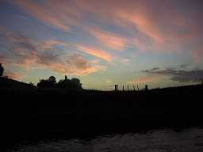
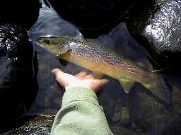
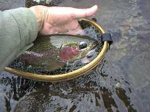
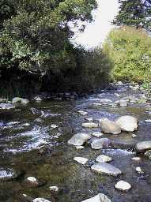

釣行日誌 ＮＺ編
４月 秋の彷徨の始まり
2000/04/14 (土)

早朝から山麓南側斜面から流れ出る川へ出撃。 渓相はまずまずだが、河床に玉石や岩がないので単調な川である。ちび虹鱒を４尾程度釣る。
感覚は日本のやまめ釣りと同様。しかし、このサイズを先調子の６番ロッドで釣っては竿と魚と双方に気の毒である。
河岸を変えておなじみの川へ。犯行現場へ戻る犯人の心境。
朝も遅いが誰もいない。橋の上百メートルにある淵に40cmぐらいの虹鱒が４～５尾群れていて思わず胸が熱くなる。ドライフライに反応するものの、食いつかない。産卵前でアタマがそれどころではないのかもしれない。
瀬で２尾。大物をばらした藪では例によって大物がいたが、なぜかドライに出たものの合わせが成功せず見切られる。ペアのつがいなのか、同サイズがもう１尾いて驚いた。背中の青色が美しい。
木陰の長淵で、虹鱒が定位していたが食わない。どうも産卵期が近いのでそれどころではないらしい。
木の下からブラウンが口を開けたがフライをくわえ損なった。鈍くさいヤツめ。二度と出ないし。
お気に入りのチャラチャラ瀬で立て続けに２尾の40cm級。ジャンプはいつも感動的である。
ちょっとしたボサの流れ込みで、いつものようにライズがある。大きめのドライを流すとぼわーんと出てきてぱちゃ！ とくわえ損なう。鈍くさいヤツ。もう数回流すとがっしり喰った。あまり大暴れしないがデカイ。じっくりやりとりして取り込んだ。ああ、見事なレインボー、50cm。
右曲がりの淵で、例によってライズがあるが、またしても釣れない。ここは釣りやすいのでいじめられているのだろうか？
瀬で掛けた虹鱒。体長25cmぐらいなのに１メートルもジャンプした。
左曲がり（ドッグレッグ）の淵のアタマで掛けた虹鱒。体長30cmぐらいなのに上流に突進しゴンゴンとロッドを引き絞った。弾丸のよう。

二股の分かれで、ちょっとした藪の陰があり、流速は早いが望ましいポイントである。
流れ出しからライズした魚影、ファイトが始まると茶・赤色なのでブラウンと判る。くねくねとファイトしてとうとう美しい魚体を横たえた。40cm。
キャンプ場の近くまで行ったが、沢が小さくなったのであきらめて帰る。腕が痛い。一年分の鱒を釣ったような気がする。
2000/04/20 (木)
昨夜の雨に再びココロを熱くして、Ｋ川へ。着いたとたんに豪雨となり、しばし車中で休憩。いざ川にはいると茶色の濁流でガチョーン。
このまま帰るのも残念なので牧場のはずれまで行くと、そこから上は原生林なのでちょっとした笹濁り。まさに絶好調の水具合。ニンフの状況だが、大きめのドライに出る虹鱒見たさにドライにこだわる。
ドッグレッグの淵の直上流から、瀬で餌を捕食する虹鱒が当たりだした。川の真ん中で掛けるとどこに取り込むか非常に厳しい。結局下流に走られずるずると引きずられる。35cmの紅色鮮やかなレインボー。

だらだらの深瀬を流していると、足元でズボンとライズ。すかさず流すとシュポンと吸い込む。グンと合わせたとたんにどっかーんとジャンプ。重い走りが荒瀬に乗ってロッドが軋む。ようやくネットで掬うと40cmの大物。雄。
どうすれば水深50cmの場所で高さ１ｍのジャンプができるのか不思議だが、事実なのでしょうがない。興奮の後でしみじみと不思議に思う。
例の二股で、今日は反対側からブラウンが出た。大きさから言って先週のブラウンであろう。（笑） とんでもない浅瀬から出るので嬉しくなる。そんな印象は岩魚のような感じである。

どんづまりの長瀬。虹鱒が定位して流下するなにものかを食べている。ドライを流すが見切られた。というか水面は見ていないようだ。
大きめのニンフに白いマーカーを結わえ、ニュージーランドスタイルで投げ込む。マーカーがスイーッと沈み、すかさず合わせるとジャンプの炸裂３連発。30cmほどの虹鱒であるがスゴイファイトであった。ニンフも面白いなぁ。
下流に戻ると、幾分濁りが収まっている。再び荒瀬を攻め始めたところで枝に引っかかったフライを外そうとヒョイッとロッドをしゃくるとティップがポキン！！ がちょーんと嘆いたがしょうがない。ティップ無しでキャストを続けるが、ラインとティップが絡まってしまって不便なことこの上ない。浅はかであった。
めぼしいポイントをドライとニンフで釣り下る。ドライに出たが、喰い損なった１尾を、ニンフで狙う。水深が浅いので、マーカー無し。キャストしたあとでラインの先端を見つめていると、カクンと上流へ戻る。ひょいとしゃくるとズバーンとジャンプが始まり、いつものお祭り騒ぎとなる。最後にばらした。（笑）
その上でもドライに出たが、合わせ損ねた。今日はドライの出方が渋い。
駐車場まで戻ると、地元の釣り人に会った。へぇ、やっぱり釣りに来る人もいるんだ。（笑） 自分専用の川のような気になっていたので反省する。（笑）
帰途、国道沿いの Fishing & Hunting などの釣具店に寄って、フライロッド用のロッドティップを探す。店長のロニーさんが懸命に探してくれたものの、あいにく大きな海釣り竿用の部品しかおいていなかった。
しかたなく帰宅後、金属製ティップをコンロで熱し、折れたカーボン部分が抜け出したところで内部を綺麗にして瞬間接着剤で修理した。やれやれ。保証期間内なのでロトルアにあるキルウェルというメーカーに送れば修理してくれるのだが、その期間釣りが出来ないのが惜しいのである。（笑）
釣行日誌ＮＺ編 目次へ
サイトマップ
ホームへ
お問い合わせ